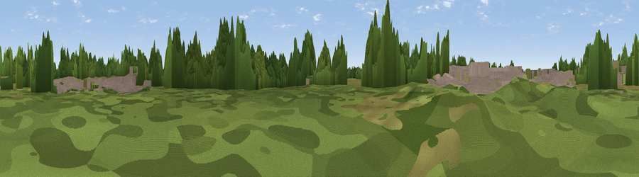

Goonhilly Down
#38053 in England · top 79% of its area beats it · near St MartinThe view, rendered

A 360° render of this exact spot computed from the terrain model, tree cover and land cover — summer colours, afternoon light, calibrated against photographs of famous viewpoints. Real trees, hedges and buildings will differ in detail.
The panorama
Grey silhouette: terrain skyline in each direction (720 bearings, Earth curvature and refraction included). Dashed green: skyline with trees (+15 m) and buildings (+8 m) as obstacles. Blue strip: how far the ground is visible on each bearing.
Where the view opens
Wedge length = distance to the farthest visible ground on that bearing (vegetation-aware). Rings at 10, 25 and 50 km.
What fills the view
52% grassland · 22% woodland · 12% built-up · 9% cropland · 3% water
Angular shares of the visible panorama (visual magnitude), not map area. Landscape diversity 0.55 (0–1 Shannon).
Key numbers
More beautiful places nearby
The staircase of upgrades: each row has a higher view potential than everything closer. Driving times are estimates from straight-line distance, calibrated against real road routing — check an actual route before setting out.
| Place | Direction | Drive | Score |
|---|---|---|---|
| Viewpoint near Mawgan | NNW · 3 km | ~7 min | 40.2 |
| Viewpoint near Kuggar | SSE · 4 km | ~10 min | 60.3 |
| Viewpoint near Coverack | SE · 5 km | ~12 min | 64.2 |
| Viewpoint near St. Keverne | ENE · 6 km | ~12 min | 72.2 |
| Viewpoint near St. Keverne | E · 8 km | ~15 min | 72.5 |
| Viewpoint near Mullion | SW · 8 km | ~16 min | 72.7 |
| Viewpoint near Porthoustock | E · 8 km | ~17 min | 74.0 |
| Viewpoint near Ashton | WNW · 15 km | ~26 min | 81.3 |
50.04753, -5.17797 · source: dobih hill · position refined by local search. Computed location — check access rights before visiting.